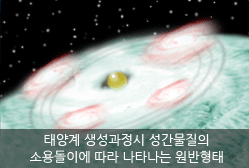
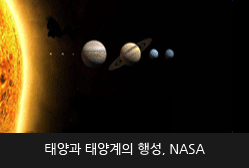
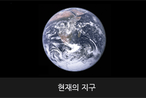

- 바로가기 메뉴
- 메인메뉴 바로가기
- 본문내용 바로가기

생성원리

태양계와 지구
- 
- 태양은 1세대 별의 소멸 후 다시 모인 미행성과 성간물질에 의해 재탄생된 2세대 별로 추측되며, 지구는 태양계가 만들어지는 시기와 동일하게 만들어졌습니다.
우주 내 떠돌던 미행성과 성간물질들이 만유인력에 의해 서로 부딪치면서 거대한 성간물질 덩어리가 형성되고, 이 주위를 목성의 고리와 흡사한 원반 모양의 물질들(미행성, 성간)이 회전하게 됩니다.
이 원반 내에서도 소규모로 미행성이나 성간물질이 서로 충돌하여 몇몇 작은 덩어리들을 형성하고 중앙의 큰 덩어리를 중심으로 공전하게 됩니다. 중앙의 커다란 자석과 주위의 작은 몇몇 자석을 놓은 바닥에 쇳가루를 뿌려 자석들에 의해 끌려가는 형태를 유추하면 이해가 쉬울 것입니다.
- 
- 충돌이 더욱 가속화되어 성장한 중앙의 큰 덩어리는 수축이 정지되는 유체 역학적 평형상태에 도달하게 되는데, 이로써 태양이라는 항성(별)이 생성됩니다.
이때 발산하는 강한 빛과 에너지 분출에 의해 태양주위의 성간물질이 대부분 날아가 버리고 주위의 몇몇 작은 덩어리들(행성)만 남게 되어 마침내 태양계가 탄생하게 됩니다. 스스로 빛을 낼 수 없는 몇몇 행성 중 하나가 바로 우리가 살고 있는 지구입니다.
참고 : 최근 명왕성은 질량이 작고 일정하지 않은 공전궤도와 태양계와의 연광성 부족을 이유로 태양계에서 퇴출되었습니다
- 
- 지구는 자발적인 빛을 내는 태양주위에 스스로 에너지를 만들지 못하는 이러한 원시행성 중 하나에 불과합니다. 지구상에 떨어지는 대부분의 운석은 태양계 생성 당시 함께 만들어진 원시적 물질이기 때문에 이 운석의 연령을 측정하여 태양과 지구의 나이를 추측할 수 있습니다.
또한 태양의 질량과 광도를 이용하여 태양의 남은 일생도 추측할 수 있는데, 현재 절반의 생을 살았으며, 앞으로 약 50억년 후면 완전 소멸될 것입니다. 지구는 태양이 소멸되기 전, 폭발적인 부피증가와 물질방출을 동반하는 적색왜성이 되는 단계에서 나머지 행성들과 함께 종말을 맞이하게 됩니다